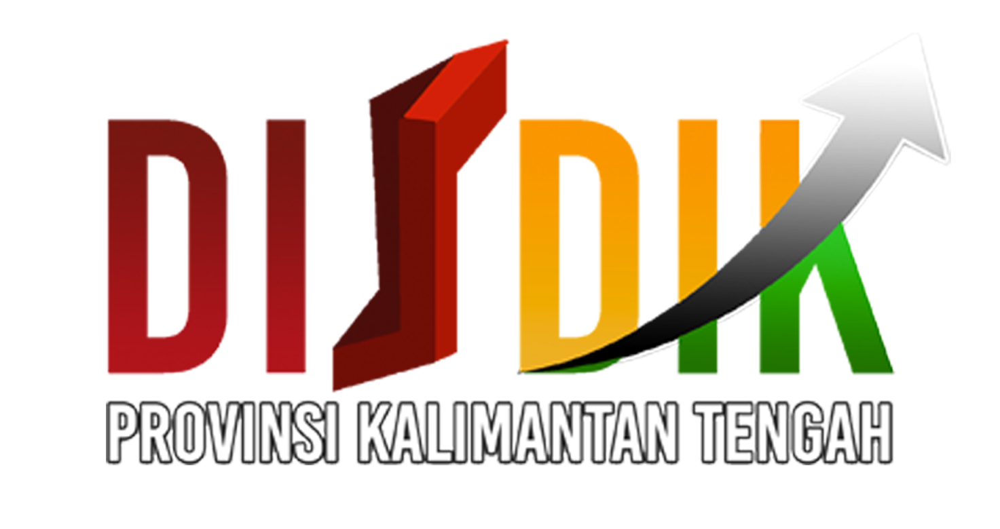
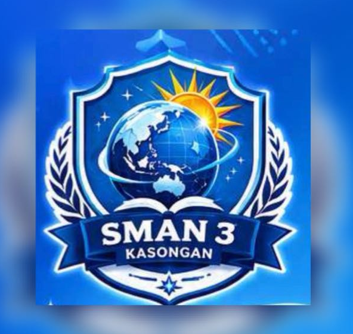

PETA DAN
PEMETAAN
Pengertian, komponen, jenis, proyeksi, simbol, dan manfaat peta
dalam kehidupan sehari-hari
klik untuk memutar
Capaian & Alur Tujuan Pembelajaran Kurikulum Merdeka Fase E
Rasional Mata Pelajaran Geografi
Mata pelajaran Geografi membekali peserta didik dengan pengetahuan, keterampilan, dan sikap untuk memahami dan menganalisis fenomena geosfer serta interaksi antara manusia dan lingkungannya. Pembelajaran Geografi mendorong peserta didik untuk berpikir secara keruangan, kelingkungan, dan kewilayahan dalam menghadapi berbagai tantangan global, seperti perubahan iklim, bencana alam, dan pembangunan berkelanjutan.
Karakteristik Mata Pelajaran Geografi
Geografi memiliki karakteristik sebagai ilmu yang mengkaji persamaan dan perbedaan fenomena geosfer (fisik dan sosial) dengan sudut pandang kelingkungan, kewilayahan, dan keruangan. Ilmu ini bersifat interdisipliner, menghubungkan ilmu alam dan ilmu sosial, serta berorientasi pada pemecahan masalah nyata di masyarakat.
Capaian Pembelajaran (CP) – Fase E
Pada akhir Fase E, peserta didik memahami konsep dasar Geografi, peta, pengindraan jauh, Sistem Informasi Geografis (SIG), penelitian Geografi, dan fenomena geosfer fisik yaitu litosfer, atmosfer, dan hidrosfer sebagai ruang kehidupan.
Alur Tujuan Pembelajaran (ATP)
ATP merupakan rangkaian tujuan pembelajaran yang disusun secara sistematis dan logis untuk mencapai CP.
- TP 1: Menganalisis pengertian dan fungsi peta sebagai alat representasi permukaan bumi.
- TP 2: Mengidentifikasi komponen-komponen peta (judul, skala, legenda, orientasi, dll.).
- TP 3: Menerapkan pengetahuan tentang jenis-jenis peta, proyeksi, dan simbolisasi peta.
- TP 4: Mengevaluasi manfaat peta dalam kehidupan sehari-hari dan pembangunan wilayah.
Dimensi Profil Lulusan (DPL)
- Penalaran Kritis: Menganalisis informasi geografis secara objektif.
- Komunikasi: Menyajikan hasil analisis secara lisan/tertulis.
- Kolaborasi: Bekerja sama dalam kelompok memecahkan masalah geografis.
- Kreativitas: Menghasilkan produk (peta konsep, infografis).
- Kemandirian: Mencari dan mengolah informasi geografis secara bertanggung jawab.
- Kewargaan: Menghargai lingkungan dan menjaga kelestarian bumi.
Indikator Pencapaian (Terukur)
- TP 1: Menganalisis pengertian peta dari 3 sumber, menyajikan dalam peta konsep.
- TP 2: Mengidentifikasi minimal 8 komponen peta dari contoh peta tematik.
- TP 3: Menerapkan jenis, proyeksi, dan simbol dengan membuat peta sederhana.
- TP 4: Mengevaluasi manfaat peta melalui studi kasus, menyajikan laporan.
Elemen Keterampilan Proses
- Mengamati: Mengamati komponen peta tematik.
- Menanya: Merumuskan pertanyaan tentang informasi peta.
- Mengumpulkan Informasi: Mengumpulkan data spasial dari berbagai sumber.
- Menalar: Menganalisis pola dan hubungan dalam peta.
- Mengomunikasikan: Menyajikan hasil analisis dalam laporan/presentasi.
Indikator Pencapaian Tujuan Pembelajaran
Indikator 1
Menganalisis pengertian dan fungsi peta sebagai alat representasi permukaan bumi.
Indikator 2
Mengidentifikasi komponen-komponen peta (judul, skala, legenda, orientasi, dll.).
Indikator 3
Menerapkan pengetahuan tentang jenis-jenis peta, proyeksi, dan simbolisasi peta.
Indikator 4
Mengevaluasi manfaat peta dalam kehidupan sehari-hari dan pembangunan wilayah.
Kerangka Pembelajaran Mendalam Pendekatan Deep Learning
Pengertian Peta Representasi Permukaan Bumi
Kata "peta" berasal dari bahasa Inggris "map" yang berarti gambaran permukaan bumi. Peta adalah representasi atau gambaran permukaan bumi pada bidang datar yang diperkecil dengan skala tertentu.
Definisi Peta dari Beberapa Ahli
ICA
Peta adalah representasi atau gambaran unsur-unsur kenampakan abstrak yang dipilih dari permukaan bumi, digambarkan pada bidang datar dan diperkecil dengan skala tertentu.
Erwin Raisz
Peta adalah gambaran konvensional dari permukaan bumi yang diperkecil, digambarkan pada bidang datar, dilengkapi simbol dan tulisan.
Bintarto
Peta adalah gambaran permukaan bumi pada bidang datar dengan skala tertentu, menggambarkan kenampakan menggunakan simbol.
Suharyono & Amien
Peta adalah alat penyampaian informasi tentang keruangan yang menggambarkan fenomena di permukaan bumi dengan simbol terstandar.
- Menunjukkan Lokasi: Menentukan letak suatu tempat.
- Memberikan Informasi: Menyajikan data geografis.
- Alat Analisis: Membantu perencanaan tata ruang, mitigasi bencana.
- Komunikasi: Menyampaikan informasi spasial secara visual.
"Peta adalah jendela untuk melihat dunia tanpa harus berada di sana."
Definisi Peta Menurut Para Ahli Pendapat Tokoh Kartografi
Berikut definisi peta dari berbagai ahli kartografi. Klik kartu untuk penjelasan lengkap.
ICA
International Cartographic AssociationDefinisi resmi:
- Peta adalah representasi atau gambaran unsur-unsur kenampakan abstrak yang dipilih dari permukaan bumi atau benda angkasa.
- Digambarkan pada bidang datar dan diperkecil dengan skala tertentu.
- Menggunakan simbol-simbol untuk menyajikan informasi geografis.
Erwin Raisz
Ahli Kartografi Amerika"Bapak Kartografi Modern":
- Peta adalah gambaran konvensional dari permukaan bumi yang diperkecil.
- Digambarkan pada bidang datar, dilengkapi simbol dan tulisan.
- Bertujuan memperjelas informasi tentang suatu wilayah.
Bintarto
Ahli Geografi IndonesiaDefinisi:
- Peta adalah gambaran permukaan bumi pada bidang datar dengan skala tertentu.
- Menggambarkan kenampakan-kenampakan di permukaan bumi.
- Menggunakan simbol-simbol untuk memudahkan interpretasi.
Suharyono & Amien
Ahli Geografi IndonesiaDefinisi:
- Peta adalah alat penyampaian informasi tentang keruangan.
- Menggambarkan fenomena di permukaan bumi dengan simbol terstandar.
- Berfungsi sebagai media komunikasi spasial.
Claudius Ptolemaeus
Astronom & Geografi YunaniPenulis Geographia:
- Peta adalah penyajian informasi tentang seluruh bagian bumi yang diketahui.
- Menggunakan sistem koordinat lintang dan bujur.
- Karyanya menjadi dasar kartografi modern selama 1.400 tahun.
Gerardus Mercator
Ahli Kartografi FlandriaPelopor Proyeksi Mercator:
- Peta adalah representasi sistematis dari permukaan bumi.
- Mengembangkan proyeksi silinder untuk navigasi laut akurat.
- Karyanya mengubah cara dunia dipetakan dan dinavigasi.
Kesimpulan: Peta memiliki karakteristik: representasi, skala, simbol, dan fungsi komunikasi.
"A map is the greatest of all epic poems." — Gilbert H. Grosvenor
Komponen & Jenis Peta Membaca dan Mengklasifikasikan Peta
Komponen-Komponen Peta
Sebuah peta yang baik harus memiliki beberapa komponen utama.
1. Judul Peta
Memberikan informasi tentang isi atau tema peta.
Judul menjelaskan apa yang digambarkan, misalnya "Peta Persebaran Penduduk".
2. Skala Peta
Perbandingan jarak di peta dengan jarak sebenarnya.
Skala angka (1:100.000) atau garis. Menentukan tingkat detail.
3. Legenda
Keterangan tentang simbol-simbol yang digunakan.
Membantu memahami makna simbol seperti warna, garis, titik.
4. Orientasi
Menunjukkan arah utara pada peta.
Biasanya tanda panah dengan huruf U (Utara) atau N.
5. Inset
Peta kecil yang menunjukkan lokasi peta utama dalam konteks lebih luas.
Membantu memahami posisi wilayah yang dipetakan.
6. Simbol
Tanda atau gambar yang mewakili kenampakan di permukaan bumi.
Titik (kota), garis (jalan), area (hutan). Harus mudah dipahami.
7. Tahun Pembuatan
Menunjukkan kapan peta dibuat atau diperbarui.
Penting karena kenampakan bumi berubah seiring waktu.
8. Sumber Peta
Informasi tentang lembaga atau penulis yang membuat peta.
Menunjukkan kredibilitas dan keandalan data, misalnya BIG.
Jenis-Jenis Peta
Peta Tematik
Menggambarkan tema tertentu, seperti:
- Peta Kepadatan Penduduk: Persebaran jumlah penduduk.
- Peta Iklim: Curah hujan, suhu, tipe iklim.
- Peta Tanah: Jenis dan karakteristik tanah.
- Peta Pariwisata: Lokasi objek wisata.
Peta Umum
Menggambarkan kenampakan umum, seperti:
- Peta Topografi: Bentuk permukaan bumi (relief, kontur).
- Peta Dunia: Seluruh permukaan bumi skala kecil.
- Peta Chorografi: Wilayah luas skala sedang.
- Peta Kadaster: Kepemilikan tanah skala besar.
Ingat: Setiap jenis peta memiliki fungsi berbeda. Peta tematik untuk analisis spesifik, peta umum untuk orientasi dan navigasi.
Proyeksi & Simbol Peta Teknik Pemetaan Dasar
Proyeksi Peta
Proyeksi peta adalah cara memindahkan permukaan bumi yang bulat ke bidang datar. Setiap proyeksi pasti mengalami distorsi.
Proyeksi Silinder
Memproyeksikan ke tabung silinder.
Baik untuk daerah ekuator. Contoh: Proyeksi Mercator untuk navigasi laut.
Proyeksi Kerucut
Memproyeksikan ke kerucut.
Cocok untuk daerah lintang sedang. Contoh: Proyeksi Lambert untuk peta AS dan Eropa.
Proyeksi Azimuthal
Memproyeksikan ke bidang datar.
Baik untuk daerah kutub. Contoh: Proyeksi Gnomonic untuk penerbangan jarak jauh.
Penting: Tidak ada proyeksi sempurna. Pemilihan tergantung tujuan dan wilayah.
Simbol Peta
Simbol peta adalah tanda atau gambar yang mewakili kenampakan di permukaan bumi.
Simbol Titik
Untuk objek titik: kota, gunung, lokasi penting.
Simbol Garis
Untuk objek linier: jalan, sungai, rel kereta.
Simbol Area
Untuk objek wilayah: hutan, danau, permukiman.
Catatan: Standar simbol peta di Indonesia diatur oleh Badan Informasi Geospasial (BIG).
Keterampilan & Manfaat Peta Life Skills & Pembangunan Wilayah
Keterampilan Dasar Membaca Peta
Orientasi Peta
Kemampuan membaca arah mata angin dan menghubungkan dengan kondisi lapangan.
Interpretasi Skala
Kemampuan mengukur jarak sebenarnya berdasarkan skala peta.
Membaca Simbol & Legenda
Kemampuan memahami arti simbol melalui legenda.
Aktivitas: Membaca Peta Sederhana
Coba temukan informasi berikut dari peta di buku atau Google Maps:
- Identifikasi judul dan tema peta.
- Temukan skala dan hitung jarak antara dua titik.
- Baca legenda dan cari arti 5 simbol.
- Tentukan arah mata angin dengan orientasi.
- Catat hasil dan diskusikan dengan teman.
Contoh Hasil
Judul: Peta Wisata Yogyakarta
Skala: 1:50.000 (1 cm = 500 m)
Jarak Malioboro–Kraton: 2,5 cm × 500 = 1.250 m
Simbol: ☆ wisata, ■ stasiun, ━ jalan utama, ░ permukiman, ▒ sawah
Lakukan aktivitas serupa dengan peta daerahmu!
Manfaat Mempelajari Peta
Navigasi & Orientasi
Menemukan lokasi dan arah tujuan.
Peta menentukan lokasi, arah, dan rute perjalanan. Sangat berguna bagi wisatawan, pelaut, pilot.
Contoh: Google Maps, peta laut, peta udara.Analisis Spasial
Menganalisis pola dan hubungan fenomena.
Peta memungkinkan analisis pola persebaran fenomena geografis.
Contoh: Analisis kerawanan banjir dengan peta topografi dan tata guna lahan.Perencanaan Wilayah
Membantu tata ruang dan pembangunan infrastruktur.
Peta digunakan untuk merancang tata kota, zonasi, dan infrastruktur.
Contoh: Perencanaan transportasi, lokasi sekolah, ruang terbuka hijau.Mitigasi Bencana
Mengenali dan mengurangi risiko bencana.
Peta rawan bencana membantu identifikasi zona risiko dan perencanaan evakuasi.
Contoh: Peta rawan gempa, longsor, tsunami."Peta adalah bahasa universal yang menghubungkan manusia dengan ruang dan tempatnya."
Asesmen Pembelajaran Evaluasi Pemahaman Peta dan Pemetaan
Kerjakan asesmen berikut untuk mengukur pemahamanmu. Selamat mengerjakan!
A Pilihan Ganda
Pilihlah satu jawaban yang paling tepat!
B Analisis & Refleksi
Jawablah pertanyaan berikut dengan uraian yang jelas!
Catatan: Kerjakan dengan jujur dan mandiri. Selamat berlatih!
Refleksi Pembelajaran Menyimpulkan Materi
🌟 Apa yang Kamu Dapatkan Hari Ini?
- ✅Memahami pengertian peta dan fungsinya.
- ✅Mengenal komponen, jenis, proyeksi, dan simbol peta.
- ✅Menyadari bahwa peta membantu memahami ruang dan lingkungan.
Renungkan
"Menurutmu, mengapa kemampuan membaca peta penting di era digital saat ini?"
Tuliskan jawabanmu sebagai refleksi pribadi.
"A map is the greatest of all epic poems."
🎉 Selamat!
Kamu telah menyelesaikan materi Peta dan Pemetaan.
Siapkan dirimu untuk bab selanjutnya!
Referensi Daftar Pustaka
- Kurikulum Merdeka: CP IPS Fase E-Fase F, BSKAP Kemendikbudristek (2024).
- Bintarto. Metode Penelitian Geografi. UGM Press.
- Sumaatmadja, Nursid. Metodologi Pengajaran Geografi. Bumi Aksara.
- Raisz, Erwin. General Cartography. McGraw-Hill.
- Suharyono & Amien. Pengantar Filsafat Geografi. Ombak.
- Daldjoeni, N. Geografi untuk Indonesia. Alumni.
- Rais, J. & Asfar, M. Peta dan Pemetaan. Pradnya Paramita.
- I Made Sandy. Republik Indonesia: Geografi Regional. UI Press.
- Haggett, Peter. Geography: A Modern Synthesis. Harper & Row.
- de Blij, H.J. & Muller, P.O. Geography: Realms, Regions and Concepts. Wiley.
- Muta’ali, Luthfi. Geografi Pemukiman. UGM Press.
- Sartono Kartodirdjo. Pendekatan Ilmu Sosial dalam Metodologi Sejarah. Gramedia.